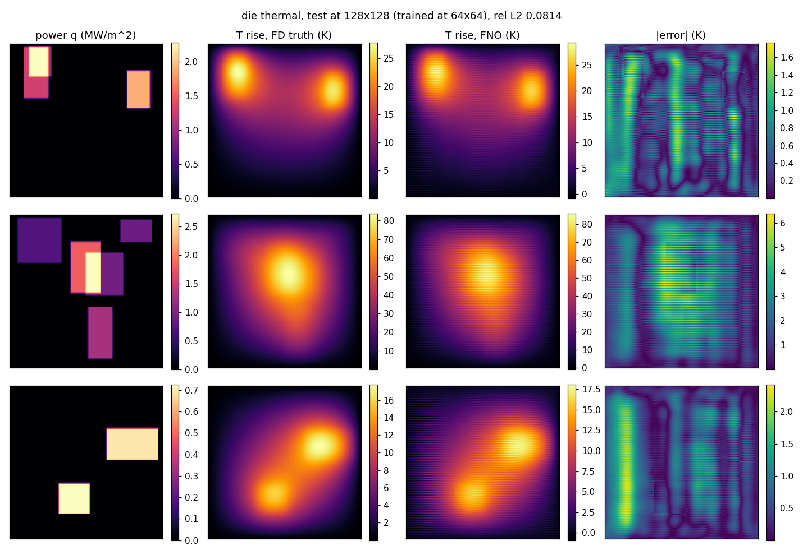
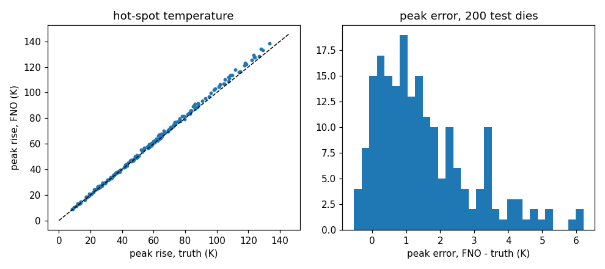

Module 6 of 13 · one week
The FFT needs a uniform grid on a periodic box, and almost nothing in engineering is one. This module covers the four ways out: message passing on the mesh itself, encoding geometry into a latent grid, changing the transform to match the manifold, and attention. The lab is the course's first semiconductor problem, a thermal die, deliberately posed on the one geometry an FNO handles directly.
At 08:44 the seed episode's host asks how transfer works across geometries, which is the right question and the one an FNO cannot answer on its own. Anandkumar's reply in the earlier episode, between 01:11:36 and 01:12:14, is a shared latent geometric space into which arbitrary shapes are mapped (research_notes/company-episode.md:80). That description matches GINO, which is public and has numbers, so the claim is checkable.
The rest of the module supplies the evidence for a stronger statement: the architecture has to match the manifold, and getting it wrong is not a small penalty. A flat FFT on the globe destabilises long rollouts, and a grid CNN undersamples an airfoil's wake even when it spends four times more cells on it. Both failures have the same shape as Module 1's CNN argument, and both repay a close look, because the pattern recurs.
Pfaff, Fortunato, Sanchez-Gonzalez and Battaglia (ICLR 2021) take the simplest possible position: if the simulator uses a mesh, learn on the mesh. The state at time \(t\) is a graph \(M^t = (V, E_M)\). Each node carries a fixed mesh-space coordinate \(u_i\) and, for Lagrangian systems where the mesh itself moves through space, a world-space coordinate \(x_i\). The architecture is encode, process, decode (research_notes/pdf-mgn-pdebench.md:19-44).
| Dataset (Table 1, p.7) | nodes | steps | GPU \(t_{\text{full}}\) ms/step | solver ms/step | RMSE 1 step ×10⁻³ | rollout 50 | rollout all |
|---|---|---|---|---|---|---|---|
| FlagSimple (cloth, ArcSim) | 1579 | 400 | 19 | 4166 | 1.08 | 92.6 | 139.0 |
| FlagDynamic (cloth, remeshed) | 2767 | 250 | 837 | 26199 | 1.57 | 72.4 | 151.1 |
| SphereDynamic (cloth on a sphere) | 1373 | 500 | 140 | 1610 | 0.292 | 11.5 | 28.3 |
| DeformingPlate (hyperelastic, COMSOL, tetrahedral) | 1271 | 400 | 33 | 2893 | 0.25 | 1.8 | 15.1 |
| CylinderFlow (incompressible NS, COMSOL) | 1885 | 600 | 23 | 820 | 2.34 | 6.3 | 40.88 |
| Airfoil (compressible NS, SU2) | 5233 | 600 | 38 | 11015 | 314 | 582 | 11529 |
Four results carry the paper's argument, and each one is an ablation, not a headline (:104-119). Removing world edges raises rollout RMSE by 51 percent on FlagDynamic and 92 percent on SphereDynamic, and the reason is structural: on SphereDynamic the cloth and the obstacle it drapes over are not mesh-connected at all, so without world edges there is no path along which contact information can travel. Replacing relative positions with absolute ones raises Airfoil rollout RMSE to 26.5, because the network then has to learn translation invariance from data instead of getting it from the encoding. History hurts rather than helps: \(h=0\) or 1 is best and more overfits, which is the opposite of the earlier GNS result on particles (:124).
The fourth result is the geometry argument proper. A U-Net on a 128×128 grid undersamples the wake at the wing tip "even while using 4× more cells" than the mesh, because it has to spend those cells uniformly while the mesh concentrates them where the physics is. Airfoil mesh edge lengths span \(2\times10^{-4}\) m to 3.5 m, a range of four orders of magnitude, and no uniform grid covers that without either wasting cells in the far field or missing the boundary layer. Adaptivity is not a refinement here; it is the whole problem.
Two more numbers matter, because they set expectations for every speed claim in this course. On the same 8-core CPU as the solvers, MeshGraphNets is 4 to 22 times faster; on a single V100 it is 11 to 290 times faster (Appendix A.5.1). The paper is careful about why the second number is not the honest one: ArcSim, COMSOL and SU2 have no GPU support, and a general-purpose solver with partial GPU support such as ANSYS shows only 2 to 4 times speedup even under good conditions, so "we find it hard to provide a 'true' hardware-agnostic performance comparison". Any claim of a thousand-fold speedup should be read against that sentence. Generalization does hold up, though: a model trained on flags of 1.5k to 2.8k nodes runs on a 20k-node windsock, and 50-step error shows no trend with node count (Appendix A.5.3).
The code caveat. DeepMind's release is TensorFlow 1 with Sonnet under version 2 (research_notes/repos.md:287-289), so it will not run in a modern environment without work. The maintained PyTorch path is NVIDIA PhysicsNeMo's MeshGraphNet, whose structural_mechanics/deforming_plate example mirrors the paper's dataset; PhysicsNeMo was mid-refactor to v2.0 in 2026, so pin a version (:349-350). This course does not install it, and the lab below stays on a grid.
If the FFT needs a uniform grid, one option is to give it one that is not the physical grid. GINO (Li, Kovachki, Choy et al., arXiv 2309.00583) encodes the shape as a signed distance function plus a point cloud, uses a GNO layer to move from the irregular points onto a regular latent grid, runs an FNO there, and uses a second GNO layer to decode back onto the mesh. The two graph layers pay the irregularity cost once at each end, and the expensive middle runs at \(O(J\log J)\). On 3D vehicle aerodynamics at Reynolds numbers up to five million it reports being 26,000 times faster than optimized GPU CFD for the drag coefficient, with a quarter of the error of other deep learning methods on unseen geometries (research_notes/lineage.md:60-69). The neuraloperator library ships GINO and FNOGNO, and the mini car dataset data/mini_car.pt with plot_OTNO_car_cfd.py is its only bundled irregular-geometry example (repos.md:41-45, :74, :102).
CNO (Raonić et al., arXiv 2302.01178) attacks the same problem from the opposite side: keep the CNN, but band-limit every convolution and every nonlinearity so that the network is a well-defined operator, and prove universality for it. That is the constructive answer to Module 1's CNN counterexample, and the same group's ReNO analysis then shows FNO is not perfectly alias-free either, because ReLU reintroduces frequencies outside the band (web-papers.md:689-700). Module 2's spectrum table is that prediction measured: a spurious \(1.44\times10^{-2}\) sitting at the Nyquist bin.
Localized kernels (Liu-Schiaffini et al., ICML 2024, arXiv 2402.16845) add differential and local integral kernels alongside the spectral branch, on the grounds that a truncated Fourier operator over-smooths. They report 34 to 72 percent lower relative \(L^2\) on turbulent 2D Navier-Stokes and on spherical shallow water (lineage.md:170-179). The library exposes these as LocalNO and FiniteDifferenceConvolution (repos.md:38, :53).
SFNO (Bonev et al., arXiv 2306.03838) replaces the discrete Fourier transform with a spherical harmonic transform, and reports that this is what makes a stable autoregressive rollout for a full simulated year possible: 1,460 six-hourly steps, where the flat version blows up (lineage.md:82-91). The claim is usually stated as "a flat FFT on the globe introduces artifacts and unphysical dissipation", which is true and is not an argument. The argument is arithmetic.
The mechanism. A latitude-longitude grid at \(0.25^\circ\) resolution has 1440 steps around each circle of latitude. At the equator the circle is the full 40,075 km, so one step is \[\frac{40{,}075\ \text{km}}{1440} = 27.8\ \text{km}.\] At latitude \(\phi\) the circle has radius \(R\cos\phi\), so one step is \(27.8\cos\phi\) km. At \(\phi = 89.75^\circ\), the last grid row before the pole, \(\cos\phi = 0.00436\) and one step is \[27.8 \times 0.00436 = 0.121\ \text{km}.\] So a convolution kernel that is a fixed number of grid points wide has a physical width that varies by a factor of \(1/0.00436 = 229\) between the equator and the polar row of the same grid.
Why that is Module 1's argument again. Module 1 showed a CNN fails because a kernel fixed in grid points has a physical width that shrinks as the grid refines. Here the width varies by 229 times within a single grid, and a Fourier multiplier along the longitude axis is exactly such a kernel: it acts identically on every row. A translation-invariant operator in grid coordinates is not a translation-invariant operator on the sphere, because the sphere has no translation group in those coordinates. The spherical harmonic transform fixes this by diagonalising the Laplace-Beltrami operator of the actual manifold, whose eigenfunctions are the spherical harmonics and not the complex exponentials.
The practical consequence is the one the papers report. FourCastNet v1 used flat adaptive Fourier layers; v2 switched to SFNO; FourCastNet 3 builds a geometric probabilistic ensemble on top of it, and Module 12 has its numbers. Anandkumar's version in the earlier episode, at 01:03:11, is that "none of the other architectures work for climate because climate requires us to assume the world is a globe", followed by the concession that the spherical model still shows some instability near the poles (company-episode.md:57). That concession is consistent with the arithmetic above: the spherical transform removes the coordinate artefact, but the polar rows still hold far more grid points per unit area than anywhere else. The library provides SFNO and SphericalConv, importable only when torch_harmonics is installed (repos.md:37, :49).
Module 3 stated Proposition 6 and named the kernel form it uses. The construction is set out here with its pieces, because the two limits it exposes are what the transformer branch of the field has spent three years fixing.
Take the input-dependent kernel \(\kappa(x,y,v(x),v(y)) = g(v(x),v(y))\,R\), where \(g\) is a softmax-normalized exponential of \(\langle Av(x), Bv(y)\rangle/\sqrt m\). Discretize the integral by Nyström on \(k\) points. The layer becomes \(u_j = \sigma\big(v_j + R_{\text{out}}\sum_q S_j(z_q)R_{\text{val}}v_q\big)\), which is single-head self-attention without layer normalisation, and multi-head attention is a sum of such kernels (JMLR p.28, pdf-fno-jmlr.md:453-463).
Two limits fall straight out of that reading. The kernel is dense in \(k\), so the layer costs \(O(k^2)\), which is Module 3's original cost problem returning in new clothes and Module 9's arithmetic. And the discretization is not refinable: the softmax is normalized over exactly the \(k\) tokens you have, and CNN patch tokenization as in a ViT bakes a fixed grid into the encoder, so the paper concludes that "many efficient vision transformers are not special cases of neural operators" (p.29). A transformer is an operator layer with a fixed discretization welded on.
The transformer branch of the field has answered the cost limit repeatedly. Galerkin Transformer (Cao, NeurIPS 2021, arXiv 2105.14995) drops the softmax entirely and reads linear attention as a Petrov-Galerkin projection, which makes the cost linear and gives the layer a numerical-analysis interpretation. OFormer (2205.13671) uses cross-attention so that inputs and queries may be sampled at different places. GNOT (2302.14376) adds heterogeneous normalized attention and geometric gating so that several input functions on irregular meshes can be handled at once. Transolver (ICML 2024 spotlight, 2402.02366) groups mesh points into learnable slices by physical state and attends over slices instead of points, which is linear in the point count and gives a 22 percent average gain on six benchmarks; Transolver++ (2502.02414) reaches million-point car and aircraft meshes on a single GPU with a further 13 percent on the benchmarks and over 20 percent on the industrial cases (lineage.md:126-146, :192-223). Every attention-based foundation model in Module 10, including MPP, DPOT, Poseidon and Aurora, uses patching or Fourier attention for exactly this reason, and inherits the refinability limit along with the cost fix.
LAB ../labs/02_thermal/run_thermal.py. No public neural operator benchmark exists for semiconductor thermal problems (lineage.md:328-329), so this data is generated here. Every parameter below is a modelling choice made for this course, not a value taken from a paper. That is stated up front because it changes how the results should be read: they are a demonstration on a problem of known difficulty, not a benchmark result.
A thin silicon die, treated as a 2D plate: \(-k\,t\,(T_{xx}+T_{yy}) = q(x,y)\) on \((0,L)^2\) with \(T=0\) on all four edges. \(L=10\) mm, \(k=130\) W/(m·K) for silicon near 100 °C, and \(t=0.5\) mm die thickness. The source \(q\) is a heat flux density in W/m², built from 2 to 5 random rectangular "cores" with sides between 1 and 4 mm and flux uniform on 0.2 to 2.0 MW/m², allowed to overlap. \(T\) is the rise above the edge temperature. The operator being learned is \(q \mapsto T\), which is linear. That does not make the learning problem easy, because the FNO is not told it is linear and has no mechanism that would exploit the fact.
Solver. Five-point finite differences on a 256×256 grid of cell centres with ghost-cell Dirichlet boundaries, and one sparse LU factorization reused across all 1200 right-hand sides.
Check 1, against an analytic solution. For \(q = q_0\sin(\pi x/L)\sin(\pi y/L)\) the exact solution is \(T = \dfrac{q_0L^2}{2\pi^2kt}\) times the same sine product, because each second derivative of the sine product contributes \(-(\pi/L)^2\) and there are two of them. The script asserts a relative error below \(10^{-3}\) and measures \(1.25\times10^{-5}\), with a peak rise of 77.9 K at \(q_0 = 1\) MW/m². Check 2, grid convergence on a realistic load. A 15 W block gives a peak of 49.32 K on the 256 grid and 49.32 K on a 128 grid, with a relative field difference of \(8.3\times10^{-5}\). Data generation took 14 seconds for 1200 samples; peak rises span 5.8 to 201.1 K and die powers 2.8 to 73.2 W.
Block-average the 256² fields down to 64² for training and to 128² for the second test grid. Averaging rather than sampling is not a detail: the input is a union of rectangles, so it is discontinuous, and Module 0's Fact 1 route 1 is closed for it. A block average represents a rectangle edge that falls between cells by its area fraction, which is route 3. Normalize \(q\) by \(10^6\) W/m² and \(T\) by 100 K. Then a 2D FNO with n_modes=(16,16), which in this library keeps 16 bins on the first axis and 9 on the real-FFT axis (Module 2's warning box), 32 hidden channels, 4 layers, relative \(L^2\) loss, Adam at \(10^{-3}\) halved every 50 epochs, 200 epochs, batch 20.
Three metrics are recorded beyond field error, and they are the ones a thermal engineer actually asks for: the peak temperature rise in kelvin, the position of the hot spot in millimetres, and the fraction of dies whose predicted hot spot lies within 0.5 mm of the true one. Module 8 explains why a field RMSE alone is not a sufficient answer to a design question.
The model has 1,192,801 parameters and trained in 614 seconds over 200 epochs with no other job on the GPU, reaching a training relative \(L^2\) of 0.0047 (results_thermal.json).
| Test grid | Relative L2 | Peak error, mean (K) | Peak error, max (K) | Hot spot distance, mean (mm) | Within 0.5 mm | True peak, mean (K) |
|---|---|---|---|---|---|---|
| 64² (training grid) | 0.0065 | 0.20 | 1.27 | 0.035 | 100 percent | 58.5 |
| 128² (never seen) | 0.0814 | 1.55 | 6.21 | 0.158 | 98.5 percent | 58.6 |


At the training grid the surrogate answers the engineering question. A 0.65 percent field error, a mean peak error of 0.20 K on a mean peak of 58 K, and the hot spot located within 0.5 mm on all 200 test dies is a usable tool for early floorplan screening, and it runs in milliseconds against a solver that takes a sparse factorization.
At the unseen 128² grid it stops answering it. The field error rises twelve and a half times to 8.1 percent, the mean peak error to 1.55 K with a worst case of 6.21 K, and 3 of the 200 hot spots move more than 0.5 mm. That degradation is far worse than Lab 01's 18 to 56 percent in one dimension, and the figures show why in a way the number does not: the output carries stripes.
The stripes, measured rather than described. Splitting the error by spatial frequency band separates a smooth error from a grid-scale one (../labs/01_burgers/metrics.json, entries thermal_res64 and thermal_res128, computed by metrics.py). In kelvin:
| Band | fRMSE at 64² (K) | fRMSE at 128² (K) | Ratio |
|---|---|---|---|
| Low | 0.0601 | 0.2576 | 4.3× |
| Mid | 0.0220 | 0.0302 | 1.4× |
| High | 0.0079 | 0.2127 | 27× |
| Boundary RMSE | 0.1649 | 0.6514 | 4.0× |
| Worst point error | 3.45 | 13.76 | 4.0× |
The third row against the second is the one to compare. At the training grid the high-frequency error is the smallest of the three bands, 0.0079 K, which is what a well-behaved smooth surrogate looks like. At 128² it is 27 times larger and now rivals the low-band error, while the mid band barely moves. The error did not grow uniformly; it appeared at the grid scale. That is the stripe pattern in the figure, quantified, and it is the two-dimensional counterpart of the fixed Nyquist component Module 2 found in one dimension.
Why the stripes run along one axis rather than both is not settled by this lab, and there are two candidate causes. n_modes=(16,16) keeps 16 two-sided bins on the first axis and 9 one-sided bins on the real-FFT axis, so the two axes are treated almost but not exactly alike. And the coordinate channel is a fixed function of grid position, which changes meaning when the grid changes. Neither was tested. Module 2's exercise 2 is the ablation that would decide it, and it is listed there as not yet run.
One operational note that belongs in Module 9 but was learned here: 614 seconds for 200 epochs of 50 steps at 64² is 61 ms per training step on this GPU, and evaluating 200 dies at 128² in chunks of 20 takes under a second. The first attempt evaluated all 200 at 128² in a single batch alongside another training job and thrashed the 4 GB card. That is the smallest possible version of Module 9's lesson, and it cost an hour.
The die is a square with uniform conductivity and a fixed edge temperature, which is precisely the geometry an FFT-based model handles natively. So this lab exercises none of the geometry content above, and that is deliberate: it isolates the resolution behaviour by removing every other difficulty. The capstone's semiconductor path in Module 13 adds them back one at a time. First a heat spreader as a second material, which makes \(k\) a field and turns the operator nonlinear in the coefficient exactly as Darcy is. Then an irregular package outline, which is the point where GINO's encode-FNO-decode, or a mesh model, stops being optional. Then inverse design, placing the blocks to minimize the peak, which is Module 12's seismic pattern of differentiating through the operator.
2010.03409v4.pdf), ablations p.8 to 9, timing table and the hardware-comparison caveat in Appendix A.5.1, scaling in A.5.3: research_notes/pdf-mgn-pdebench.md:19-146.21-1524.pdf p.28, with the ViT remark on p.29: research_notes/pdf-fno-jmlr.md:453-463. ReNO and CNO alias analysis: research_notes/web-papers.md:689-700.research_notes/lineage.md, per-paper sections.GINO, FNOGNO, SFNO, LocalNO, the mini car data), plus the PhysicsNeMo and TensorFlow 1 caveats: research_notes/repos.md:34-53, :270-303, :306-350.research_notes/company-episode.md:57, :80.../labs/02_thermal/results_thermal.json, model_thermal.pt, seed 0. Banded and boundary error metrics: ../labs/01_burgers/metrics.json, entries thermal_res64 and thermal_res128.You can now say why a mesh model needs two coordinate systems, compute the factor by which a flat grid distorts distances on a sphere, name what stops a vision transformer from being a neural operator, and read a banded error table to tell a smooth error from a grid-scale one.